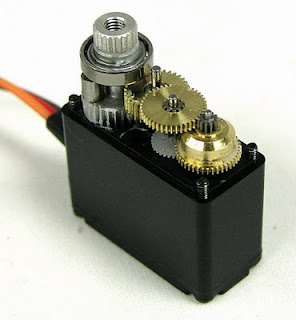
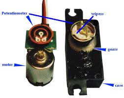
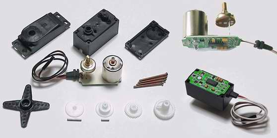
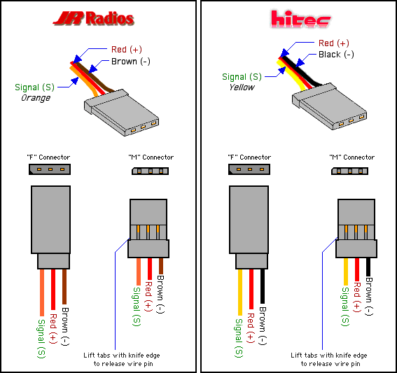
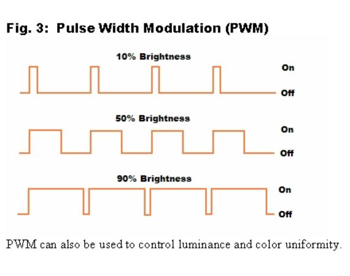

工業用伺服馬達:
- 操作要求扭力、精度、速度、耐操穩固、信號回授等等
- 可以有氣壓、油壓、或是電力驅動的方式呈現
- 直流伺服馬達、永磁交流伺服馬達、感應交流伺服馬達
- 控制器的功能在於扭矩控制、速度控制、與位置控制等
- 伺服驅動器(servo driver)包含有控制器與功率放大器
- 伺服馬達內的光電編碼器提供解析度回授信號給控制器
伺服馬達（Servo Motor）依其用途要求概分為工業用伺服馬達與一般RC伺服馬達。
工業用伺服馬達:
一般RC伺服馬達(RADIO CONTROL SERVO MOTOR):
 
RC伺服馬達實體拆解開來的各式零配件: 每個輸出接頭只有3個接點，也就是VCC、Signal、GNG三個腳位
這三個接點，各廠牌的順序大都一樣，但有時接線的顏色不一樣
固定週期不同duty cycle的PWM波形
| 7 bit | 6 bit | 5 bit | 4 bit | 3 bit | 2 bit | 1 bit | 0 bit | |
| TCCR1A | COM1A1 | COM1A0 | COM1B1 | COM1B0 | - | - | WGM11 | WGM10 |
COM1A1
COM1B1COM1A0
COM1B0
DESCRIPTION0 0 Normal port operation, OC1A/OC1B disconnected. 0 1 Mode 9,11,14,15 only: Enable OCR1A only (OC1B disconnected) 1 0 None-inverted mode (HIGH at bottom, LOW on Match) 1 1 Inverted mode (LOW at bottom, HIGH on Match)
Applies only to PWM modes
| 7 bit | 6 bit | 5 bit | 4 bit | 3 bit | 2 bit | 1 bit | 0 bit | |
| TCCR1B | ICNC1 | ICES1 | - | WGM13 | WGM12 | CS12 | CS11 | CS10 |
CS bits
CS12 CS11 CS10 DESCRIPTION 0 0 0 Timer/Counter2 Disabled 0 0 1 No Prescaling 0 1 0 Clock / 8 0 1 1 Clock / 64 1 0 0 Clock / 256 1 0 1 Clock / 1024 1 1 0 External clock source on T1 pin, Clock on Falling edge 1 1 1 External clock source on T1 pin, Clock on rising edge
MODE WGM13 WGM12 WGM11 WGM10 DESCRIPTION TOP 0 0 0 0 0 Normal 0xFFFF 1 0 0 0 1 PWM, Phase Corrected, 8bit 0x00FF 2 0 0 1 0 PWM, Phase Corrected, 9bit 0x01FF 3 0 0 1 1 PWM, Phase Corrected, 10bit 0x03FF 5 0 1 0 1 Fast PWM, 8bit 0x00FF 6 0 1 1 0 Fast PWM, 9bit 0x01FF 7 0 1 1 1 Fast PWM, 10bit 0x03FF 8 1 0 0 0 PWM, Phase and Frequency Corrected ICR1 9 1 0 0 1 PWM, Phase and Frequency Corrected OCR1A 10 1 0 1 0 PWM, Phase Correct ICR1 11 1 0 1 1 PWM, Phase Correct OCR1A 14 1 1 1 0 Fast PWM ICR1 15 1 1 1 1 Fast PWM OCR1A
Waveform Generator Mode bits (Abbreviated)
| 7 bit | 6 bit | 5 bit | 4 bit | 3 bit | 2 bit | 1 bit | 0 bit | |
| TCCR1C | FOC1A | FOC1B | - | - | - | - | - |
| 7 bit | 6 bit | 5 bit | 4 bit | 3 bit | 2 bit | 1 bit | 0 bit | |
| TIMSK1 | - | - | ICIE1 | - | - | OCIE1B | OCIE1A | TOIE1 |
| 7 bit | 6 bit | 5 bit | 4 bit | 3 bit | 2 bit | 1 bit | 0 bit | |
| TIFR | OCF2 | TOV2 | ICF1 | OCF1A | OCF1B | TOV1 | - | TOV0 |
| 7 bit | 6 bit | 5 bit | 4 bit | 3 bit | 2 bit | 1 bit | 0 bit | |
| TCNT1H |
|
| ||||||
| TCNT1L |
| 7 bit | 6 bit | 5 bit | 4 bit | 3 bit | 2 bit | 1 bit | 0 bit | |
| OCR1AH |
|
| ||||||
| OCR1AL |
| 7 bit | 6 bit | 5 bit | 4 bit | 3 bit | 2 bit | 1 bit | 0 bit | |
| OCR1BH |
|
| ||||||
| OCR1BL |
Duty_Cycle = [ON_time / (ON_time + OFF_time) ] * 100
Output_Voltage = Duty_Cycle * Input_VoltageNow if we take our duty cycle and multiply it by our voltage we will get the output voltage. So if we have a 5V power supply and we activate a PWM on a 25% duty cycle we will make an analog device behave as if it was receiving a 1.25V signal. Cool eh!?
The AVR Fast PWM Mode
The AVR fast PWM mode could generate the most high frequency PWM waveform compared to the other two PWM modes (i.e. Phase Correct or Phase and Frequency Correct mode). This PWM mode simply uses the TIMER counter register (TCNTn, where n represent the TIMER 0, TIMER1, and TIMER2 respectively) incremental value which is start from 0×00 (BOTTOM) to 0xFF (8-bit TOP) or 0xFFFF (16-bit TOP).
When the TIMER counter register reach the output compare register (OCRnA or OCRnB) value then the wave generator circuit will CLEAR (logical low) the output compare bit channel (OCnA or OCnB). When the TIMER counter register value reach the TOP value then it will SET (logical high) the output compare bit channel and the whole process will repeat again from BOTTOM. This PWM generation process could be shown on this following diagram:
As shown on the diagram above, the behavior of output compare bit channel (OCnA or OCnB) output could be set to non-inverting (CLEAR and SET) or inverting (SET and CLEAR) mode by setting the compare match channel bit (COMnA1, COMnA0, COMnB1, and COMnB0) on Timer/Counter register A (TCCRnA). The Fast PWM mode could be set by setting the wave generation mode bit (WGM01 and WGM00) on Timer/Counter register A (TCCRnA) and WGM02 bit on TCCRnB register. When the TIMER counter register (TCNTn) equal to Output Compare Register (OCRnA or OCRnB) it will generate the Output Compare interrupt and when the TCNTn register reach TOP it will generate the TIMER overflow interrupt (TOV).
We will use the simplest timer, TIMER1 for PWM generation. So we have an 9 bit counter counting from 0 to 511 and then resetting to 0 and so on.
若令COM1A1、COM1A0、COM1B1、
此ATmega328微晶片處於 16 MHz 運作時最大能耐之韌體調整伺服馬達位置的精確度約可達 0.1 度（180°/1800 steps，1mSec/1800=0.56uSec），但馬達實際角度切換位置會受馬達內部控制機制及齒輪影響。
純硬體控制PWM時序與信號輸出，程式碼用的最少效率最佳，但會受限於硬體PWM信號輸出引腳，無法做任何管理支配動作
硬體控制PWM時序結合中斷觸發輸出信號，可善加利用一般輸出埠當PWM信號輸出
軟體控制PWM時序結合中斷觸發輸出信號，
純軟體控制PWM時序與輸出信號，最沒有效率的寫法，也沒有善加利用硬體資源（硬體所提供的功能）
The Servo Control generally need a signal every 20ms and the high pulse should be between 1ms and 2ms. If our repeating frequency is every 20ms then an 9 bit timer (having 512 increments) would mean each increment would represent 20.48ms/512 or 0.04ms. However: most of the 20.48ms is dormant and all we have to play with is the pulse duration between 1ms and 2ms and we can only break this down into 1/0.04 or 25 steps. So an 9 bit timer would only give us 25 independent positions for a normal servo. Most servos (subject to make and model) have around 90 possible steps - so only being able to access 25 of them isn't making the most of the servo - although it may(?) be enough for your particular purpose. Using a 16 bit timer would give a timer granularity of 20ms/65536 or 0.0003ms and so for the 1ms to 2ms pulse width would give 3,276 individual steps. So this is overkill but at least we can make the most of the abilities of the servo. Also: the 16 bit Timers allow us to precisely set the value of TOP in order to generate an exact 20ms signal.